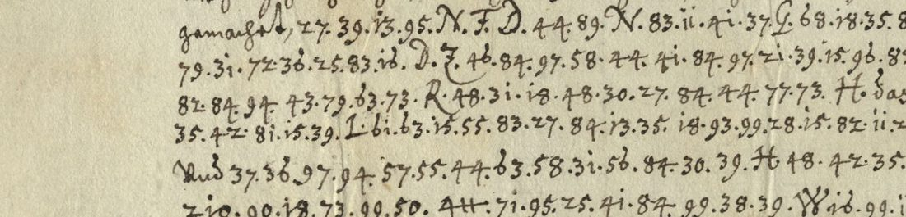
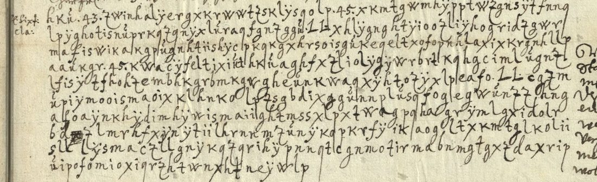

At a glanceKey recovered from the ciphertext alone · partial · 9,338 of 9,736 cipher groups
- The letters
- Otto von der Malsburg, general war commissary, to Landgrave Wilhelm V of Hesse-Kassel, mostly from Wesel, 15 January to 28 March 1637. With them are a French letter signed “232” and German news extracts from London in the same key.
- Where
- Hessisches Staatsarchiv Marburg, HStAM 4 h Nr. 1411, ff. 3–33, “Korrespondenz in Chiffren mit dem Generalkommissar Otto v.d. Malsburg”. HCPortal records 496–509 mark all ten as not solved.
- The cipher
- German letter by letter in two-digit groups 10–99, with two to seven groups for each letter, capital-letter signs for common pairs (ch, ei, st, ss, tt, mm, sch) and three-digit codes for names and military words.
- How it was deciphered
- No key for Malsburg survives among the 176 Hesse-Kassel key sheets on HCPortal. Annealing three letters (1,575 groups) against a 17th-century German model gave the same key from every start. The signs were valued from context, and 236 doubtful groups were checked again on the scans.
- What it says
- Garrisons without pay or bread, the siege of Ehrenbreitstein (“Hermannstein”), Jan de Werth at Cologne, the refusal of safe-conducts for Hessian envoys to the peace talks, and plans with the Dutch States General.
- Still open
- About forty code groups (193 tokens; five valued from context), and a ten-line cipher in lower-case letters at the foot of f. 12, which is another system.

01 The letters and the key
Otto von der Malsburg served Landgrave Wilhelm V as general war commissary for the Hessian army in Westphalia. In 1637 Hesse-Kassel was under imperial ban, Upper Hesse was occupied, and the landgrave had moved his army into East Frisia, where he died in September. File 4 h Nr. 1411 at Marburg keeps Malsburg’s reports from January to March of that year. Each is a clear letter with long cipher runs, and several are nearly all cipher.
| folio | HCPortal | date | cipher groups | read |
|---|---|---|---|---|
| 3 | 496 | 5/15 Jan 1637, signed | 455 | 96.5% |
| 12 | 497 | Wesel, 7/17 Jan 1637 | 712 | 96.9% |
| 14 | 502 | Jan 1637 | 695 | 92.8% |
| 15–16 | 503 | Jan 1637 (“Triplicat” and a letter) | 1,086 | 95.0% |
| 18 | 504 | 14/24 Feb 1637 | 639 | 96.9% |
| 23–24 | 505 | 7/17 Feb 1637, signed | 2,015 | 97.6% |
| 25 | 506 | 5 Mar / 23 Feb 1637, signed | 592 | 97.5% |
| 28–29 | 507 | 28 Mar 1637 (old style), signed | 3,165 | 96.0% |
| 30–31 | 508 | “Duplicat” of ff. 28–29 | (3,241) | used as a check copy |
| 32–33 | 509 | French letter signed “232”, 3 Apr 1637; news extracts of March | 377 | 88.1% |
The cipher is a homophonic substitution into German. The table has 89 two-digit groups: e has seven (16, 33, 48, 49, 61, 79, 84), u seven, a and o six, n, i and t five, and the rarer letters two or three. The order of the table is irregular. Common letter pairs have capital signs: N and D for ch, Y and G for ei, Z and O for st, W and P for ss, L and A for tt, R, C, E and M for mm, X, j and J for sch, H for ll, S and F for au, T and B for ff, Q for ai. Single figures are ordinary numerals (“5 [tausend] Reichsthaler”). About forty-five three-digit groups between 115 and 273 are codes for places, persons and military words. The writer leaves no word spaces and the groups are separated by dots.
The same layout, a two-digit table with digraph signs and codes from 111, appears in the key that Wilhelm Burchard Sixtinus took to Hildesheim, Bremen and Hamburg in December 1635 (HCPortal key 5). Some code numbers even coincide (193, 201, 210, 212). But Sixtinus’s table does not decipher Malsburg’s letters: the chancery issued each correspondent his own table in a common pattern.
02 The decipherment
Spelling is as the cipher gives it, with u/v and i/j not distinguished. Square brackets mark a supplied or doubtful letter, and <> an open code.
5/15 January 1637 (f. 3)
… gemachet, das ich auch noch nit weiss, wo hervor uns[e]re garnisonen hiernechst der unterhalt … genommen werden soll, da die contributiones vom platten lande sowol alhier als in <239> ein ende haben, und wirt man nunmehr alle monat auf … zwolf viertel casselische viertel, weil die unterofficirer duppelt commis bekommen … Es ist noch zeit, das man sich beim konig von Ungern … wegen der friedenstractaten und salvum conductum vor die gesanten nach Cöln sollicitire.
He does not know where the garrisons’ keep is to come from now that the contributions from the open country have ended, both here and in <239>. The rations are now reckoned monthly in Kassel Viertel of grain, because the non-commissioned officers draw double bread. It is still time to press the King of Hungary (Ferdinand III) for the peace talks and for safe-conducts for the Hessian envoys to Cologne.
Wesel, 7/17 January 1637 (f. 12)
… ich weiss nun nicht, wie ich es wegen anstellen soll … durch Friesslant mit wagen und pferden zu gehen ist unmöglich. Es ist von guter hant avisiret, dass man zu Regenspurg geschlossen, den gesanten nach Cöln keinen salvum conductum zu erteilen; herjegen berichtet mich der Statthalter Nesselrot, dass der Bischoff von Wirzburg an ihn im Augusto geschriben … apart zu Hamburg oder Lübeck tractiren lassen.
Word has come from a good source that Regensburg (the electoral diet that made Ferdinand III King of the Romans) has resolved to give the Hessian envoys no safe-conduct to Cologne. Statthalter Nesselrode reports a letter from the Bishop of Würzburg; the alternative is separate talks at Hamburg or Lübeck.
January 1637 (ff. 14–16)
The provisioning of Hermannstein (Ehrenbreitstein) and its garrison; Obrist Hoffman’s troops and routes by Marburg, Corbach and Brilon; Jan de Werth in person at Cologne (in clear). On ff. 15–16: no audience yet; notice that the truce (“Stilstant”) is ended; companies of foot and of dragoons, recruiting patents already issued; the ambassador of the States General; “er redet aber nirgent von fried machen, sagt er wolte einen finger aus der faust drumb geben”.
14/24 February 1637 (f. 18)
Es seint aber die <212> ein teils so erfroren, das auch etliche zu kruppeln worden, und etliche glidder haben müssen ablösen lassen; so seint auch viel hernach gestorben.
The winter march: men frozen and crippled, limbs amputated, many dead since.
7/17 February 1637 (ff. 23–24)
… das Hermanstein nit effectivement proviandiret sei, disputiret … befinden nun in der that, das wir mit einem Frantzosen gehandelt haben … unsere garnisonen seint also verderbet, das die <200> notwendig weggehen.
A dispute over whether Hermannstein had been “effectively provisioned”, and over payments and gifts to the commanders; “we find in fact that we have been dealing with a Frenchman” (Ehrenbreitstein was then held by a French garrison). Reichsthaler owed on account, ransom for prisoners, the peace talks said to be moving to Picardy, Margrave Sigismund of Brandenburg’s commission, a separate peace with the imperial commissioners, and garrisons so run down that men must leave.
5 March / 23 February 1637 (f. 25)
<120> has resolved to content the cavalry; payment for ransoms and other costs; bills of exchange still not received at Cologne.
28 March 1637, old style (ff. 28–29)
The longest letter: his journey held up for days on the Watten; twelve-pound guns, constables and ammunition; Jan de Werth between the Ruhr and <268>; whether the States General will take Hesse into their alliance and give a muster place in the Cleves country; the planned junction at Cloppenburg, Quakenbrück, Minden, Vechta, Wildeshausen and Diepholz, and the colonels Uffeln and Carpf.
The French letter and the London extracts (ff. 32–33)
A letter in French signed with the number 232, 3 April 1637, whose cipher runs are French in the same key (“par la lettre de n[ost]re ambassadeur extraordinaire … à Londres”, “ledict Sengell”), and German extracts of a letter from London of 16/26 March about the Palatine cause and Prince Rupert. Large paired capitals (AA, GG, OO, XX, CC, KK) stand for names.
03 Method
The catalogue entry asked first whether Malsburg’s key was among the Hesse-Kassel key sheets of 1635–52. HCPortal describes 176 key records from the Marburg key volumes, each with the people who used it; all were fetched. None names Malsburg as a user (one list of name codes gives “Otto v. der Malßburg – 523”), and the tables of the likeliest sheets (Sixtinus 1635, a sheet of “1637 or before”, and two others) do not decipher f. 3.
The eighteen scans were transcribed group by group. Annealing a homophonic key on f. 3 alone (455 groups, about 80 symbols) gave only letter noise. Three letters together (1,575 groups) gave the same key from every start and German text. The capital signs were then valued where the text demanded them: no[N] = noch, la[W]en = lassen, ge[X]lo[W]en = geschlossen, Ste[A]in = Stettin. The digit table was re-annealed over all the letters with the signs fixed.
The reading was measured by splitting each deciphered run into words of 17th-century German (the Deutsches Textarchiv prints of 1470–1670, plus names and spellings checked in context). A group counts as read when all its letters fall inside words. The ten letters give 9,338 of 9,736 groups (95.9%); the 193 open code groups account for half the rest, and 97.9% of the non-code text reads. The same measure on shuffled keys gives 50–58%. Every group that did not read was checked again on the scans: 24 misreadings and 2 doubled groups were corrected, and 210 were confirmed as the writer wrote them.
04 The cipher in letters on f. 12

Below the letter of 7/17 January, ten lines (531 letters, with the numbers 43 and 45 and a double L) are written in lower-case letters. The margin note seems to read “E: Sixt: cla:”, which could mean “from Sixtinus’s key”; Sixtinus’s surviving key, however, is in figures. The block is not Malsburg’s cipher. Its index of coincidence is 0.052, lower than German (0.076) and flat at every period from 1 to 15. Simple and homophonic substitution (with or without nulls) was tried in German, Latin, French, Italian and Dutch, along with every Caesar shift and the letter alphabets among the Hesse-Kassel keys (the Reuschenberg alphabet, the MORITZ reciprocal table). None gives text. It stays open for want of its key.
05 What remains uncertain
- Codes. About forty three-digit groups and a few signs (193 tokens) have no value. Five are inferred from context and graded I: 128 = Cöln (the envoys “nach 128”), 130 = Hamburg (“apart zu 130 oder Lübeck”), 188 = die Staaten, 253 = Regiment, 273 = Compagnien. Others recur without a context that fixes them: 120 and 122 (persons at Kassel or in the field), 129, 140, 148, 176, 193, 212, and the name signs V, K, f, 4#, + and the paired capitals of ff. 32–33.
- Single groups. About 200 groups read as written but give no word; most are the writer’s slips (a homophone of the wrong letter), which the scans confirm.
- Pages in another hand. The French letter and extracts of ff. 32–33 use the same key with a few variant signs (a C-like sign for ai); 88% of their groups read.
- The letter block of f. 12, described above: not deciphered.
06 Sources
- Hessisches Staatsarchiv Marburg, HStAM 4 h Nr. 1411, ff. 3–33; scans via HCPortal, cryptograms 496, 497 and 502–509.
- HCPortal cipher keys of HStAM 4 d Nr. 1218–1236 (176 records), in particular key 5, “Clavis … Sixtinus … im Decemb. anno 1635”, and key 31 (name codes).
- E. Antal and P. Mírka, “Wrong design of cipher keys: analysis of historical cipher keys from the Hessisches Staatsarchiv Marburg used in the Thirty Years’ War”, HistoCrypt 2022.
Transcriptions, key, codes, solver and measure: targets/malsburg1637/.